This Chapter describes the computation of the minimum-norm estimates. This is accomplished with two programs: mne_inverse_operator and mne_make_movie. The chapter starts with a mathematical description of the method, followed by description of the two software modules. The interactive program for inspecting data and inverse solutions, mne_analyze , is covered in Interactive analysis.
This section describes the mathematical details of the calculation of minimum-norm estimates. In Bayesian sense, the ensuing current distribution is the maximum a posteriori (MAP) estimate under the following assumptions:
The measured data in the source estimation procedure consists
of MEG and EEG data, recorded on a total of N channels. The task
is to estimate a total of M strengths of sources located on the
cortical mantle. If the number of source locations is P, M = P for
fixed-orientation sources and M = 3P if the source orientations
are unconstrained. The regularized linear inverse operator following
from the Bayesian approach is given by the  matrix
matrix
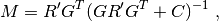
where G is the gain matrix relating the source strengths
to the measured MEG/EEG data,  is the data noise-covariance matrix
and 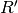 is the source covariance matrix.
The dimensions of these matrices are
is the data noise-covariance matrix
and 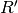 is the source covariance matrix.
The dimensions of these matrices are  ,
,  ,
and 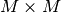, respectively. The 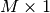 source-strength
vector is obtained by multiplying the 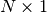 data
vector by
,
and 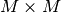, respectively. The 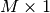 source-strength
vector is obtained by multiplying the 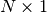 data
vector by  .
.
The expected value of the current amplitudes at time t is
then given by  , where
, where  is
a vector containing the measured MEG and EEG data values at time t.
is
a vector containing the measured MEG and EEG data values at time t.
The a priori variance of the currents is, in practise, unknown. We can express this by writing 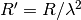, which yields the inverse operator
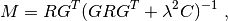
where the unknown current amplitude is now interpreted in
terms of the regularization parameter  .
Small corresponds to large current amplitudes
and complex estimate current patterns while a large means the
amplitude of the current is limited and a simpler, smooth, current
estimate is obtained.
.
Small corresponds to large current amplitudes
and complex estimate current patterns while a large means the
amplitude of the current is limited and a simpler, smooth, current
estimate is obtained.
We can arrive in the regularized linear inverse operator also by minimizing the cost function
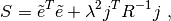
where the first term consists of the difference between the
whitened measured data (see Whitening and scaling) and those predicted
by the model while the second term is a weighted-norm of the current
estimate. It is seen that, with increasing ,
the source term receive more weight and larger discrepancy between
the measured and predicted data is tolerable.
The MNE software employs data whitening so that a ‘whitened’ inverse operator assumes the form

where 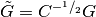 is the spatially
whitened gain matrix. The expected current values are 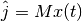,
where  is a the whitened measurement
vector at t. The spatial whitening operator
is obtained with the help of the eigenvalue decomposition 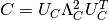 as
is a the whitened measurement
vector at t. The spatial whitening operator
is obtained with the help of the eigenvalue decomposition 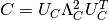 as  .
In the MNE software the noise-covariance matrix is stored as the
one applying to raw data. To reflect the decrease of noise due to
averaging, this matrix,
.
In the MNE software the noise-covariance matrix is stored as the
one applying to raw data. To reflect the decrease of noise due to
averaging, this matrix,  , is scaled
by the number of averages,
, is scaled
by the number of averages,  , i.e.,
, i.e.,  .
.
As shown above, regularization of the inverse solution is equivalent to a change in the variance of the current amplitudes in the Bayesian a priori distribution.
Convenient choice for the source-covariance matrix  is
such that 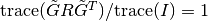. With this choice we
can approximate 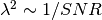, where SNR is
the (power) signal-to-noise ratio of the whitened data.
is
such that 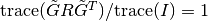. With this choice we
can approximate 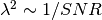, where SNR is
the (power) signal-to-noise ratio of the whitened data.
Note
The definition of the signal to noise-ratio/ relationship given above works nicely for the whitened forward solution. In the un-whitened case scaling with the trace ratio  does not make sense, since the diagonal elements summed have, in general, different units of measure. For example, the MEG data are expressed in T or T/m whereas the unit of EEG is Volts.
does not make sense, since the diagonal elements summed have, in general, different units of measure. For example, the MEG data are expressed in T or T/m whereas the unit of EEG is Volts.
Since finite amount of data is usually available to compute
an estimate of the noise-covariance matrix ,
the smallest eigenvalues of its estimate are usually inaccurate
and smaller than the true eigenvalues. Depending on the seriousness
of this problem, the following quantities can be affected:
Fortunately, the latter two are least likely to be affected due to regularization of the estimates. However, in some cases especially the EEG part of the noise-covariance matrix estimate can be deficient, i.e., it may possess very small eigenvalues and thus regularization of the noise-covariance matrix is advisable.
The MNE software accomplishes the regularization by replacing
a noise-covariance matrix estimate with
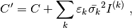
where the index  goes across
the different channel groups (MEG planar gradiometers, MEG axial
gradiometers and magnetometers, and EEG), 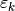 are
the corresponding regularization factors, 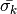 are
the average variances across the channel groups, and 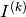 are
diagonal matrices containing ones at the positions corresponding
to the channels contained in each channel group. The values can
be adjusted with the regularization options --magreg , --gradreg ,
and --eegreg specified at the time of the inverse operator
decomposition, see Inverse-operator decomposition. The convenience script mne_do_inverse_solution has
the --magreg and --gradreg combined to
a single option, --megreg , see Calculating the inverse operator decomposition.
Suggested range of values for is
goes across
the different channel groups (MEG planar gradiometers, MEG axial
gradiometers and magnetometers, and EEG), 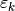 are
the corresponding regularization factors, 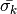 are
the average variances across the channel groups, and 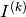 are
diagonal matrices containing ones at the positions corresponding
to the channels contained in each channel group. The values can
be adjusted with the regularization options --magreg , --gradreg ,
and --eegreg specified at the time of the inverse operator
decomposition, see Inverse-operator decomposition. The convenience script mne_do_inverse_solution has
the --magreg and --gradreg combined to
a single option, --megreg , see Calculating the inverse operator decomposition.
Suggested range of values for is  .
.
The most straightforward approach to calculate the MNE is to employ expression for the original or whitened inverse operator directly. However, for computational convenience we prefer to take another route, which employs the singular-value decomposition (SVD) of the matrix

where the superscript  indicates a
square root of . For a diagonal matrix,
one simply takes the square root of while
in the more general case one can use the Cholesky factorization 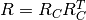 and
thus 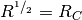.
indicates a
square root of . For a diagonal matrix,
one simply takes the square root of while
in the more general case one can use the Cholesky factorization 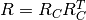 and
thus 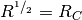.
With the above SVD it is easy to show that

where the elements of the diagonal matrix  are
are
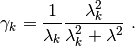
With 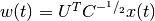 the expression for the expected current is

where  , 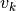 being
the th column of
, 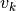 being
the th column of  . It is thus seen that the current estimate is
a weighted sum of the ‘modified’ eigenleads .
. It is thus seen that the current estimate is
a weighted sum of the ‘modified’ eigenleads .
It is easy to see that 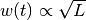.
To maintain the relation  when changes
we must have 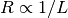. With this approach,
when changes
we must have 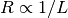. With this approach,  is
independent of and, for fixed
is
independent of and, for fixed  ,
we see directly that
,
we see directly that  is independent
of .
is independent
of .
The noise-normalized linear estimates introduced by Dale et al. require division of the expected current amplitude by its variance. Noise normalization serves three purposes:
In practice, noise normalization requires the computation of the diagonal elements of the matrix

With help of the singular-value decomposition approach we see directly that
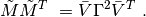
Under the conditions expressed at the end of Computation of the solution, it follows that the t-statistic values associated
with fixed-orientation sources) are thus proportional to  while
the F-statistic employed with free-orientation sources is proportional
to , correspondingly.
while
the F-statistic employed with free-orientation sources is proportional
to , correspondingly.
Note
A section discussing statistical considerations related to the noise normalization procedure will be added to this manual in one of the subsequent releases.
Note
The MNE software usually computes the square roots of the F-statistic to be displayed on the inflated cortical surfaces. These are also proportional to .
Under noiseless conditions the SNR is infinite and thus leads
to 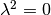 and the minimum-norm estimate
explains the measured data perfectly. Under realistic conditions,
however,  and there is a misfit
between measured data and those predicted by the MNE. Comparison
of the predicted data, here denoted by ,
and measured one can give valuable insight on the correctness of
the regularization applied.
and there is a misfit
between measured data and those predicted by the MNE. Comparison
of the predicted data, here denoted by ,
and measured one can give valuable insight on the correctness of
the regularization applied.
In the SVD approach we easily find

where the diagonal matrix  has
elements
has
elements  The predicted data is
thus expressed as the weighted sum of the ‘recolored eigenfields’ in 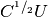.
The predicted data is
thus expressed as the weighted sum of the ‘recolored eigenfields’ in 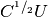.
If the --cps option was used in source space
creation (see Setting up the source space) or if mne_add_patch_info described
in Adding neighborhood/topology information to source spaces was run manually the source space file
will contain for each vertex of the cortical surface the information
about the source space point closest to it as well as the distance
from the vertex to this source space point. The vertices for which
a given source space point is the nearest one define the cortical
patch associated with with the source space point. Once these data
are available, it is straightforward to compute the following cortical
patch statistics (CPS) for each source location  :
:
The principal sources of MEG and EEG signals are generally believed to be postsynaptic currents in the cortical pyramidal neurons. Since the net primary current associated with these microscopic events is oriented normal to the cortical mantle, it is reasonable to use the cortical normal orientation as a constraint in source estimation. In addition to allowing completely free source orientations, the MNE software implements three orientation constraints based of the surface normal data:
The minimum-norm estimates have a bias towards superficial
currents. This tendency can be alleviated by adjusting the source
covariance matrix to favor deeper source locations. In the depth
weighting scheme employed in MNE analyze, the elements of corresponding
to the  th source location are be
scaled by a factor
th source location are be
scaled by a factor
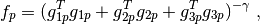
where  ,
,  , and
, and  are the three columns
of
are the three columns
of  corresponding to source location and
corresponding to source location and  is
the order of the depth weighting, specified with the --weightexp option
to mne_inverse_operator . The
maximal amount of depth weighting can be adjusted --weightlimit option.
is
the order of the depth weighting, specified with the --weightexp option
to mne_inverse_operator . The
maximal amount of depth weighting can be adjusted --weightlimit option.
The fMRI weighting in MNE software means that the source-covariance matrix is modified to favor areas of significant fMRI activation. For this purpose, the fMRI activation map is thresholded first at the value defined by the --fmrithresh option to mne_do_inverse_operator or mne_inverse_operator . Thereafter, the source-covariance matrix values corresponding to the the sites under the threshold are multiplied by 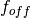, set by the --fmrioff option.
It turns out that the fMRI weighting has a strong influence on the MNE but the noise-normalized estimates are much less affected by it.
It is often the case that the epoch to be analyzed is a linear combination over conditions rather than one of the original averages computed. As stated above, the noise-covariance matrix computed is originally one corresponding to raw data. Therefore, it has to be scaled correctly to correspond to the actual or effective number of epochs in the condition to be analyzed. In general, we have

where 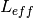 is the effective number of averages. To calculate for an arbitrary linear combination of conditions
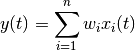
we make use of the the fact that the noise-covariance matrix
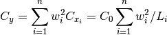
which leads to
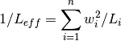
An important special case of the above is a weighted average, where

and, therefore

Instead of a weighted average, one often computes a weighted sum, a simplest case being a difference or sum of two categories. For a difference 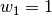 and 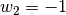 and thus
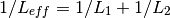
or

Interestingly, the same holds for a sum, where  .
Generalizing, for any combination of sums and differences, where 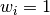 or
.
Generalizing, for any combination of sums and differences, where 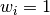 or  ,
,  ,
we have
,
we have

The program mne_inverse_operator calculates the decomposition 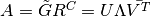, described in Computation of the solution. It is normally invoked from the convenience script mne_do_inverse_operator . This section describes the options to mne_inverse_operator should a user need to invoke it directly for special-purpose processing.
The command-line options of mne_inverse_operator are:
—version
Show the program version and compilation date.
—help
List the command-line options.
—meg
Employ MEG data in the calculation of the estimates.
—eeg
Employ EEG data in the calculation of the estimates. Note: The EEG computations have not been thoroughly tested at this time.
—fixed
Use fixed source orientations normal to the cortical mantle. By default, the source orientations are not constrained.
—loose <*amount*>
Employ a loose orientation constraint (LOC). This means that the source covariance matrix entries corresponding to the current component normal to the cortex are set equal to one and the transverse components are set to <amount> . Recommended value of amount is 0.2...0.6.
—loosevar <*amount*>
Use an adaptive loose orientation constraint. This option can be only employed if the source spaces included in the forward solution have the patch information computed, see Setting up the source space. Blaa blaa...***what???**
—fwd <*name*>
Specifies the name of the forward solution to use.
—noisecov <*name*>
Specifies the name of the noise-covariance matrix to use. If this file contains a projection operator, attached by mne_browse_raw and mne_process_raw , no additional projection vectors can be added with the --proj option. For backward compatibility, --senscov can be used as a synonym for --noisecov.
—noiserank <*value*>
Specifies the rank of the noise covariance matrix explicitly rather than trying to reduce it automatically. This option is seldom needed,
—gradreg <*value*>
Regularize the planar gradiometer section (channels for which the unit of measurement is T/m) of the noise-covariance matrix by the given amount. The value is restricted to the range 0...1. For details, see Regularization of the noise-covariance matrix.
—magreg <*value*>
Regularize the magnetometer and axial gradiometer section (channels for which the unit of measurement is T) of the noise-covariance matrix by the given amount. The value is restricted to the range 0...1. For details, see Regularization of the noise-covariance matrix.
—eegreg <*value*>
Regularize the EEG section of the noise-covariance matrix by the given amount. The value is restricted to the range 0...1. For details, see Regularization of the noise-covariance matrix.
—diagnoise
Omit the off-diagonal terms from the noise-covariance matrix in the computations. This may be useful if the amount of signal-free data has been insufficient to calculate a reliable estimate of the full noise-covariance matrix.
—srccov <*name*>
Specifies the name of the diagonal source-covariance matrix to use. By default the source covariance matrix is a multiple of the identity matrix. This option can be employed to incorporate the fMRI constraint. The software to create a source-covariance matrix file from fMRI data will be provided in a future release of this software package.
—depth
Employ depth weighting. For details, see Depth weighting.
—weightexp <*value*>
This parameter determines the steepness of the depth weighting function (default = 0.8). For details, see Depth weighting.
—weightlimit <*value*>
Maximum relative strength of the depth weighting (default = 10). For details, see Depth weighting.
—fmri <*name*>
With help of this w file, an a priori weighting can be applied to the source covariance matrix. The source of the weighting is usually fMRI but may be also some other data, provided that the weighting can be expressed as a scalar value on the cortical surface, stored in a w file. It is recommended that this w file is appropriately smoothed (see About smoothing) in mne_analyze , tksurfer or with mne_smooth_w to contain nonzero values at all vertices of the triangular tessellation of the cortical surface. The name of the file given is used as a stem of the w files. The actual files should be called <name> -lh.pri and <name> -rh.pri for the left and right hemsphere weight files, respectively. The application of the weighting is discussed in fMRI-guided estimates.
—fmrithresh <*value*>
This option is mandatory and has an effect only if a weighting function has been specified with the --fmri option. If the value is in the a priori files falls below this value at a particular source space point, the source covariance matrix values are multiplied by the value specified with the --fmrioff option (default 0.1). Otherwise it is left unchanged.
—fmrioff <*value*>
The value by which the source covariance elements are multiplied if the a priori weight falls below the threshold set with --fmrithresh , see above.
—bad <*name*>
A text file to designate bad channels, listed one channel name on each line of the file. If the noise-covariance matrix specified with the --noisecov option contains projections, bad channel lists can be included only if they specify all channels containing non-zero entries in a projection vector. For example, bad channels can usually specify all magnetometers or all gradiometers since the projection vectors for these channel types are completely separate. Similarly, it is possible to include MEG data only or EEG data only by using only one of --meg or --eeg options since the projection vectors for MEG and EEG are always separate.
—surfsrc
Use a source coordinate system based on the local surface orientation at the source location. By default, the three dipole components are pointing to the directions of the x, y, and z axis of the coordinate system employed in the forward calculation (usually the MEG head coordinate frame). This option changes the orientation so that the first two source components lie in the plane normal to the surface normal at the source location and the third component is aligned with it. If patch information is available in the source space, the normal is the average patch normal, otherwise the vertex normal at the source location is used. If the --loose or --loosevar option is employed, --surfsrc is implied.
—exclude <*name*>
Exclude the source space points defined by the given FreeSurfer ‘label’ file from the source reconstruction. This is accomplished by setting the corresponding entries in the source-covariance matrix equal to zero. The name of the file should end with -lh.label if it refers to the left hemisphere and with -rh.label if it lists points in the right hemisphere, respectively.
—proj <*name*>
Include signal-space projection (SSP) information from this file. For information on SSP, see The Signal-Space Projection (SSP) method. If the projections are present in the noise-covariance matrix, the --proj option is not allowed.
—csd
Compute the inverse operator for surface current densities instead of the dipole source amplitudes. This requires the computation of patch statistics for the source space. Since this computation is time consuming, it is recommended that the patch statistics are precomputed and the source space file containing the patch information is employed already when the forward solution is computed, see Setting up the source space and Computing the forward solution. For technical details of the patch information, please consult Cortical patch statistics. This option is considered experimental at the moment.
—inv <*name*>
Save the inverse operator decomposition here.
mne_make_movie is a program for producing movies and snapshot graphics frames without any graphics output to the screen. In addition, mne_make_movie can produce stc or w files which contain the numerical current estimate data in a simple binary format for postprocessing. These files can be displayed in mne_analyze , see Interactive analysis, utilized in the cross-subject averaging process, see Morphing and averaging, and read into Matlab using the MNE Matlab toolbox, see The Matlab toolbox.
The command-line options to mne_make_movie are explained in the following subsections.
—version
Show the program version and compilation date.
—help
List the command-line options.
—inv <*name*>
Load the inverse operator decomposition from here.
—meas <*name*>
Load the MEG or EEG data from this file.
—set <*number*>
The data set (condition) number to load. This is the sequential number of the condition. You can easily see the association by looking at the condition list in mne_analyze when you load the file.
—stcin <*name*>
Specifies an stc file to read as input.
—tmin <*time/ms*>
Specifies the starting time employed in the analysis. If --tmin option is missing the analysis starts from the beginning of the epoch.
—tmax <*time/ms*>
Specifies the finishing time employed in the analysis. If --tmax option is missing the analysis extends to the end of the epoch.
—tstep <*step/ms*>
Time step between consequtive movie frames, specified in milliseconds.
—integ <*:math:`Delta`t/ms*>
Integration time for each frame. Defaults to zero. The integration will be performed on sensor data. If the time specified for a frame is, the integration range will be 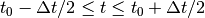.
—pick <*time/ms*>
Pick a time for the production of rgb, tif, jpg, png, or w files. Several pick options may be present. The time must be with in the analysis interval, indicated by the --tmin and --tmax options. The --rgb , --tif , --jpg , --png , and --w options control which file types are actually produced. When a --pick option is encountered, the effect of any preceding --pickrange option is ignored.
—pickrange
All previous -pick options will be ignored. Instead, snapshots are produced as indicated by the --tmin , --tmax , and --tstep options. This is useful, e.g., for producing input for scripts merging the individual graphics snapshots into a composite “filmstrip” reprensentation. However, such scripts are not yet part of the MNE software.
—bmin <*time/ms*>
Specifies the starting time of the baseline. In order to activate baseline correction, both --bmin and --bmax options must be present.
—bmax <*time/ms*>
Specifies the finishing time of the baseline.
—baselines <*file_name*>
Specifies a file which contains the baseline settings. Each line of the file should contain a name of a channel, followed by the baseline value, separated from the channel name by a colon. The baseline values must be specified in basic units, i.e., Teslas/meter for gradiometers, Teslas for magnetometers, and Volts for EEG channels. If some channels are missing from the baseline file, warning messages are issued: for these channels, the --bmin and --bmax settings will be used.
—nave <*value*>
Specifies the effective number of averaged epochs in the input data, , as discussed in Effective number of averages. If the input data file is one produced by mne_browse_raw or mne_process_raw , the number of averages is correct in the file. However, if subtractions or some more complicated combinations of simple averages are produced, e.g., by using the xplotter software, the number of averages should be manually adjusted along the guidelines given in Effective number of averages. This is accomplished either by employing this flag or by adjusting the number of averages in the data file with help of the utility mne_change_nave .
—snr <*value*>
An estimate for the amplitude SNR. The regularization parameter will be set as. The default value is SNR = 3. Automatic selection of the regularization parameter is currently not supported.
—spm
Calculate the dSPM instead of the expected current value.
—sLORETA
Calculate the noise-normalized estimate using the sLORETA approach. sLORETA solutions have in general a smaller location bias than either the expected current (MNE) or the dSPM.
—signed
Indicate the current direction with respect to the cortex outer normal by sign. Currents flowing out of the cortex are thus considered positive (warm colors) and currents flowing into the cortex negative (cold colors).
—picknormalcomp
The components of the estimates corresponding to directions tangential with the cortical mantle are zeroed out.
—subject <*subject*>
Specifies the subject whose MRI data is employed in the visualization. This must be the same subject that was used for computing the current estimates. The environment variable SUBJECTS_DIR must be set to point to a locations where the subjects are to be found.
—morph <*subject*>
Morph the data to to the cortical surface of another subject. The Quicktime movie, stc-file, graphics snapshot, and w-file outputs are affected by this option, i.e., they will take the morphing into account and will represent the data on the cortical surface of the subject defined with this option. The stc files morphed to a single subject’s cortical surface are used by mne_average_estimates to combine data from different subjects, see Averaging. If morphing is selected appropriate smoothing must be specified with the --smooth option. The morphing process can be made faster by precomputing the necessary morphing maps with mne_make_morph_maps , see Precomputing the morphing maps. More information about morphing and averaging can be found in Morphing and averaging.
—morphgrade <*number*>
Adjusts the number of vertices in the stc files produced when morphing is in effect. By default the number of vertices is 10242 corresponding to –morphgrade value 5. Allowed values are 3, 4, 5, and 6 corresponding to 642, 2562, 10242, and 40962 vertices, respectively.
—surface <*surface name*>
Name of the surface employed in the visualization. The default is inflated .
—curv <*name*>
Specify a nonstandard curvature file name. The default curvature files are lh.curv and rh.curv . With this option, the names become lh. <name> and rh. <name> .
—patch <*name*> [: <*angle/deg*> ]
Specify the name of a surface patch to be used for visualization instead of the complete cortical surface. A complete name of a patch file in the FreeSurface surf directory must be given. The name should begin with lh or rh to allow association of the patch with a hemisphere. Maximum of two --patch options can be in effect, one patch for each hemisphere. If the name refers to a flat patch, the name can be optionally followed by a colon and a rotation angle in degrees. The flat patch will be then rotated counterclockwise by this amount before display. You can check a suitable value for the rotation angle by loading the patch interactively in mne_analyze .
—width <*value*>
Width of the graphics output frames in pixels. The default width is 600 pixels.
—height <*value*>
Height of the graphics output frames in pixels. The default height is 400 pixels.
—mag <*factor*>
Magnify the the visualized scene by this factor.
—lh
Select the left hemisphere for graphics output. By default, both hemisphere are processed.
—rh
Select the right hemisphere for graphics output. By default, both hemisphere are processed.
—view <*name*>
Select the name of the view for mov, rgb, and tif graphics output files. The default viewnames, defined in $MNE_ROOT/share/mne/mne_analyze/eyes , are lat (lateral), med (medial), ven (ventral), and occ (occipital). You can override these defaults by creating the directory .mne under your home directory and copying the eyes file there. Each line of the eyes file contais the name of the view, the viewpoint for the left hemisphere, the viewpoint for the right hemisphere, left hemisphere up vector, and right hemisphere up vector. The entities are separated by semicolons. Lines beginning with the pound sign (#) are considered to be comments.
—smooth <*nstep*>
Number of smoothsteps to take when producing the output frames. Depending on the source space decimation, an appropriate number is 4 - 7. Smoothing does not have any effect for the original brain if stc files are produced. However, if morphing is selected smoothing is mandatory even with stc output. For details of the smoothing procedure, see About smoothing.
—nocomments
Do not include the comments in the image output files or movies.
—noscalebar
Do not include the scalebar in the image output files or movies.
—alpha <*value*>
Adjust the opacity of maps shown on the cortical surface (0 = transparent, 1 = totally opaque). The default value is 1.
—fthresh <*value*>
Specifies the threshold for the displayed colormaps. At the threshold, the overlayed color will be equal to the background surface color. For currents, the value will be multiplied by 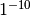. The default value is 8.
—fmid <*value*>
Specifies the midpoint for the displayed colormaps. At this value, the overlayed color will be read (positive values) or blue (negative values). For currents, the value will be multiplied by . The default value is 15.
—fmax <*value*>
Specifies the maximum point for the displayed colormaps. At this value, the overlayed color will bright yellow (positive values) or light blue (negative values). For currents, the value will be multiplied by . The default value is 20.
—fslope <*value*>
Included for backwards compatibility. If this option is specified and --fmax option is not specified, 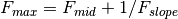.
—mov <*name*>
Produce QuickTime movie files. This is the ‘stem’ of the ouput file name. The actual name is derived by stripping anything up to and including the last period from the end of <name> . According to the hemisphere, -lh or -rh is then appended. The name of the view is indicated with - <viename> . Finally, .mov is added to indicate a QuickTime output file. The movie is produced for all times as dictated by the --tmin , --tmax , --tstep , and --integ options.
—qual <*value*>
Quality of the QuickTime movie output. The default quality is 80 and allowed range is 25 - 100. The size of the movie files is a monotonously increasing function of the movie quality.
—rate <*rate*>
Specifies the frame rate of the QuickTime movies. The default value is 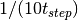, where 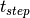 is the time between subsequent movie frames produced in seconds.
—rgb <*name*>
Produce rgb snapshots. This is the ‘stem’ of the ouput file name. The actual name is derived by stripping anything up to and including the last period from the end of <name> . According to the hemisphere, -lh or -rh is then appended. The name of the view is indicated with - <viename> . Finally, .rgb is added to indicate an rgb output file. Files are produced for all picked times as dictated by the --pick and --integ options.
—tif <*name*>
Produce tif snapshots. This is the ‘stem’ of the ouput file name. The actual name is derived by stripping anything up to and including the last period from the end of <name> . According to the hemisphere, -lh or -rh is then appended. The name of the view is indicated with - <viename> . Finally, .tif is added to indicate an rgb output file. Files are produced for all picked times as dictated by the --pick and --integ options. The tif output files are not compressed. Pass the files through an image processing program to compress them.
—jpg <*name*>
Produce jpg snapshots. This is the ‘stem’ of the ouput file name. The actual name is derived by stripping anything up to and including the last period from the end of <name> . According to the hemisphere, -lh or -rh is then appended. The name of the view is indicated with - <viename> . Finally, .jpg is added to indicate an rgb output file. Files are produced for all picked times as dictated by the --pick and --integ options.
—png <*name*>
Produce png snapshots. This is the ‘stem’ of the ouput file name. The actual name is derived by stripping anything up to and including the last period from the end of <name> . According to the hemisphere, -lh or -rh is then appended. The name of the view is indicated with - <viename> . Finally, .png is added to indicate an rgb output file. Files are produced for all picked times as dictated by the --pick and --integ options.
—w <*name*>
Produce w file snapshots. This is the ‘stem’ of the ouput file name. The actual name is derived by stripping anything up to and including the last period from the end of <name> . According to the hemisphere, -lh .w or -rh .w is then appended. Files are produced for all picked times as dictated by the --pick and --integ options.
—stc <*name*>
Produce stc files for either the original subject or the one selected with the --morph option. These files will contain data only for the decimated locations. If morphing is selected, appropriate smoothing is mandatory. The morphed maps will be decimated with help of a subdivided icosahedron so that the morphed stc files will always contain 10242 vertices. These morphed stc files can be easily averaged together, e.g., in Matlab since they always contain an identical set of vertices.
—norm <*name*>
Indicates that a separate w file containing the noise-normalization values will be produced. The option --spm must also be present. Nevertheless, the movies and stc files output will contain MNE values. The noise normalization data files will be called <name>- <SNR> -lh.w and <name>- <SNR> -rh.w .
—label <*name*>
Specifies a label file to process. For each label file, the values of the computed estimates are listed in text files. The label files are produced by tksurfer or mne_analyze and specify regions of interests (ROIs). A label file name should end with -lh.label for left-hemisphere ROIs and with -rh.label for right-hemisphere ones. The corresponding output files are tagged with -lh- <data type> .amp and -rh- <data type> .amp, respectively. <data type> equals 'mne ‘ for expected current data and 'spm ‘ for dSPM data. Each line of the output file contains the waveform of the output quantity at one of the source locations falling inside the ROI. For more information about the label output formats, see Label timecourse files.
—labelcoords
Include coordinates of the vertices in the output. The coordinates will be listed in millimeters in the coordinate system which was specified for the forward model computations. This option cannot be used with stc input files (--stcin ) because the stc files do not contain the coordinates of the vertices.
—labelverts
Include vertex numbers in the output. The numbers refer to the complete triangulation of the corresponding surface and are zero based. The vertex numbers are by default on the first row or first column of the output file depending on whether or not the --labeltimebytime option is present.
—labeltimebytime
Output the label data time by time instead of the default vertex-by-vertex output.
—labeltag <*tag*>
End the output files with the specified tag. By default, the output files will end with -mne.amp or -spm.amp depending on whether MNE or one of the noise-normalized estimates (dSPM or sLORETA) was selected.
—labeloutdir <*directory*>
Specifies the directory where the output files will be located. By default, they will be in the current working directory.
—labelcomments
Include comments in the output files. The comment lines begin with the percent sign to make the files compatible with Matlab.
—scaleby <*factor*>
By default, the current values output to the files will be in the actual physical units (Am). This option allows scaling of the current values to other units. mne_analyze typically uses 1e10 to bring the numbers to a human-friendly scale.
The --stcin option allows input of stc files. This feature has several uses:
The purpose of the utility mne_compute_raw_inverse is to compute inverse solutions from either evoked-response or raw data at specified ROIs (labels) and to save the results in a fif file which can be viewed with mne_browse_raw , read to Matlab directly using the MNE Matlab Toolbox, see The Matlab toolbox, or converted to Matlab format using either mne_convert_mne_data , mne_raw2mat , or mne_epochs2mat , see Data conversion.
—version
Show the program version and compilation date.
—help
List the command-line options.
—in <*filename*>
Specifies the input data file. This can be either an evoked data file or a raw data file.
—bmin <*time/ms*>
Specifies the starting time of the baseline. In order to activate baseline correction, both --bmin and --bmax options must be present. This option applies to evoked data only.
—bmax <*time/ms*>
Specifies the finishing time of the baseline. This option applies to evoked data only.
—set <*number*>
The data set (condition) number to load. This is the sequential number of the condition. You can easily see the association by looking at the condition list in mne_analyze when you load the file.
—inv <*name*>
Load the inverse operator decomposition from here.
—nave <*value*>
Specifies the effective number of averaged epochs in the input data, , as discussed in Effective number of averages. If the input data file is one produced by mne_browse_raw or mne_process_raw , the number of averages is correct in the file. However, if subtractions or some more complicated combinations of simple averages are produced, e.g., by using the xplotter software, the number of averages should be manually adjusted along the guidelines given in Effective number of averages. This is accomplished either by employing this flag or by adjusting the number of averages in the data file with help of the utility mne_change_nave .
—snr <*value*>
An estimate for the amplitude SNR. The regularization parameter will be set as
—spm
Calculate the dSPM instead of the expected current value.
—picknormalcomp
The components of the estimates corresponding to directions tangential with the cortical mantle are zeroed out.
—mricoord
Provide source locations and orientations in the MRI coordinate frame instead of the default head coordinate frame.
—label <*name*>
Specifies a label file to process. For each label file, the values of the computed estimates stored in a fif file. For more details, see Implementation details. The label files are produced by tksurfer or mne_analyze and specify regions of interests (ROIs). A label file name should end with -lh.label for left-hemisphere ROIs and with -rh.label for right-hemisphere ones. The corresponding output files are tagged with -lh- <data type> .fif and -rh- <data type> .fif , respectively. <data type> equals 'mne ‘ for expected current data and 'spm ‘ for dSPM data. For raw data, _raw.fif is employed instead of .fif . The output files are stored in the same directory as the label files.
—labelselout
Produces additional label files for each label processed, containing only those vertices within the input label which correspond to available source space vertices in the inverse operator. These files have the same name as the original label except that -lh and -rh are replaced by -sel-lh and -sel-rh , respectively.
—align_z
Instructs the program to try to align the waveform signs within the label. For more information, see Implementation details. This flag will not have any effect if the inverse operator has been computed with the strict orientation constraint active.
—labeldir <*directory*>
All previous --label options will be ignored when this option is encountered. For each label in the directory, the output file defined with the --out option will contain a summarizing waveform which is the average of the waveforms in the vertices of the label. The --labeldir option implies --align_z and --picknormalcomp options.
—orignames
This option is used with the --labeldir option, above. With this option, the output file channel names will be the names of the label files, truncated to 15 characters, instead of names containing the vertex numbers.
—out <*name*>
Required with --labeldir . This is the output file for the data.
—extra <*name*>
By default, the output includes the current estimate signals and the digital trigger channel, see --digtrig option, below. With the --extra option, a custom set of additional channels can be included. The extra channel text file should contain the names of these channels, one channel name on each line. With this option present, the digital trigger channel is not included unless specified in the extra channel file.
—noextra
No additional channels will be included with this option present.
—digtrig <*name*>
Name of the composite digital trigger channel. The default value is ‘STI 014’. Underscores in the channel name will be replaced by spaces.
—split <*size/MB*>
Specifies the maximum size of the raw data files saved. By default, the output is split into files which are just below 2 GB so that the fif file maximum size is not exceed.
Note
The digital trigger channel can also be set with the MNE_TRIGGER_CH_NAME environment variable. Underscores in the variable value will not be replaced with spaces by mne_compute_raw_inverse . Using the --digtrig option supersedes the MNE_TRIGGER_CH_NAME environment variable.
The fif files output from mne_compute_raw_inverse have various fields of the channel information set to facilitate interpretation by postprocessing software as follows:
channel name
Will be set to J[xyz] <number> , where the source component is indicated by the coordinat axis name and number is the vertex number, starting from zero, in the complete triangulation of the hemisphere in question.
logical channel number
Will be set to is the vertex number, starting from zero, in the complete triangulation of the hemisphere in question.
sensor location
The location of the vertex in head coordinates or in MRI coordinates, determined by the --mricoord flag.
sensor orientation
The x-direction unit vector will point to the direction of the current. Other unit vectors are set to zero. Again, the coordinate system in which the orientation is expressed depends on the --mricoord flag.
The --align_z flag tries to align the signs of the signals at different vertices of the label. For this purpose, the surface normals within the label are collected into a 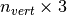 matrix. The preferred orientation will be taken as the first right singular vector of this matrix, corresponding to its largest singular value. If the dot product of the surface normal of a vertex is negative, the sign of the estimates at this vertex are inverted. The inversion is reflected in the current direction vector listed in the channel information, see above.
Note
The raw data files output by mne_compute_raw_inverse can be converted to mat files with mne_raw2mat, see Converting raw data to Matlab format. Alternatively, the files can be read directly from Matlab using the routines in the MNE Matlab toolbox, see The Matlab toolbox. The evoked data output can be easily read directly from Matlab using the fiff_load_evoked routine in the MNE Matlab toolbox. Both raw data and evoked output files can be loaded into mne_browse_raw, see Processing raw data.